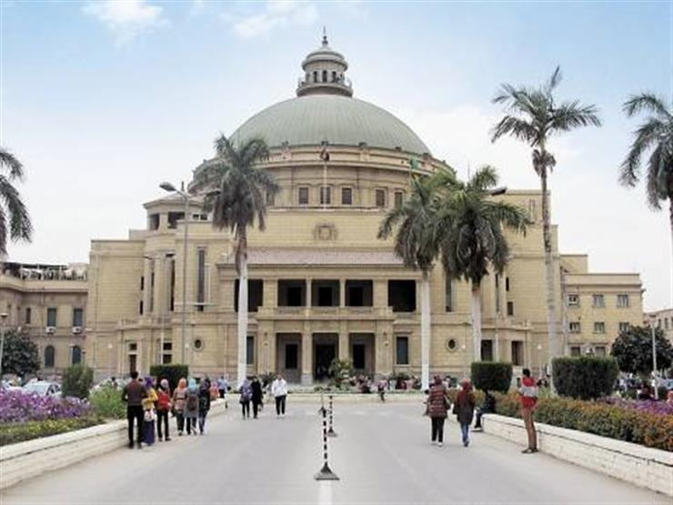

الدراسه في الجامعه القاهره

جامعة القاهرة (Egyptian Arabic: جامعة القاهرة) تعتبر جامعة القاهرة ، المعروفة بالجامعة المصرية من عام 1908 وحتى عام 1940 ، وجامعة الملك فؤاد الأول من 1940 إلى 1952 ، الجامعة العامة الأولى في مصر. حرمها الرئيسي في الجيزة ، مباشرة عبر النيل من القاهرة. تم تأسيسها في 21 ديسمبر 1908 ؛ [1] ومع ذلك ، بعد أن تم إيواءها في أجزاء مختلفة من القاهرة ، تم إنشاء كلياتها ، بدءاً من كلية الآداب ، في حرمها الرئيسي الحالي في الجيزة في أكتوبر 1929. وهي ثاني أقدم مؤسسة التعليم العالي في مصر بعد جامعة الأزهر ، على الرغم من المدارس المهنية العليا القائمة سابقا التي أصبحت فيما بعد كليات التأسيس في الجامعة. تم تأسيسها وتمويلها كجامعة مصرية من قبل لجنة من المواطنين العاديين برعاية ملكية في عام 1908 وأصبحت مؤسسة حكومية في عهد الملك فؤاد الأول عام 1925. [2] في عام 1940 ، بعد أربع سنوات من وفاته ، تم تغيير اسم الجامعة إلى جامعة الملك فؤاد على شرفه. تمت إعادة تسميته مرة ثانية بعد انقلاب ضابط الحرية لعام 1952. [1] تسجل الجامعة حاليا حوالي 155،000 طالب في 22 كلية. [3] وهي تضم ثلاثة من الحائزين على جائزة نوبل من بين خريجيها ، وهي واحدة من أكبر 50 مؤسسة للتعليم العالي في العالم بالتسجيل
تاريخ الجامعه
تأسست الجامعة في 21 ديسمبر 1908 ، نتيجة جهد لإنشاء مركز وطني للتعليم العالي. تسبق العديد من الكليات التأسيسية إنشاء الجامعة بما في ذلك كلية الهندسة (كلية الهندسة) في عام 1816 ، والتي تم إغلاقها من قبل الخديوي من مصر والسودان ، سعيد باشا ، في 1854. تأسست جامعة القاهرة باعتبارها مستوحاة من أوروبا الجامعة المدنية ، على النقيض من الجامعة الدينية للأزهر ، وأصبح النموذج الأساسي الأصلي لجامعات الدولة الأخرى. في عام 1928 ، التحقت أول مجموعة من الطالبات بالجامعة
تاسيس الجامعه
في مطلع القرن ، بدأ المفكرون المصريون والشخصيات العامة يدعون لإنشاء معهد مصري للتعليم العالي لتوفير تعليم حديث ومهني للمصريين. قدم البيروقراطي الأرميني يعقوب أرتين أول مرجع معروف إلى تأسيس جامعة مصرية في عام 1894. في تقرير ، اقترح أن "المدارس المهنية العليا القائمة يمكن أن توفر أساسًا للجامعة". [5] وشملت هذه المدارس الثانوية مدرسة أُنشئت الإدارة واللغات في عام 1868 (أصبحت كلية الحقوق في عام 1886) ، ومدرسة الري والبناء (المعروفة باسم كلية الهندسة) في عام 1866 ، ودار العلوم عام 1872 ، وكلية الزراعة في عام 1867 ، مدرسة الآثار 1869. [6]
دعا الصحفي السوري جرجي زيدان "مدرسة الكلية المصرية" في عام 1900 في مجلته الشهرية "الهلال". قدم نموذجين لهذا المعهد العالي للتعليم: كلية الأنجلو الأنجلو-أورينتال في أليجاره ، الهند ، والتي قدمت تعليمًا على النمط الغربي في اللغة الإنجليزية ، أو الكلية البروتستانتية السورية (التي أصبحت الآن الجامعة الأمريكية في بيروت) في بيروت ، يديرها المبشرون الأمريكيون. [7] ستوفر المدرسة الجديدة بديلاً لبعثات الطلاب إلى أوروبا التي بدأت في عهد محمد علي. ومن شأن الجدل الذي أحاط بمنشورات زيدان أن يمنعه في وقت لاحق من تولي منصب تدريسي في الجامعة. [8] لعب عدد من المصريين البارزين دورًا في مؤسسة الجامعة. مجموعة من كبار ملاك الأراضي ، والبيروقراطيين ، وأعضاء العائلة المالكة ، والصحفيين ، والمحامين ، ومدرسي المدارس بما في ذلك مصطفى كامل ، وتلاميذ محمد عبده مثل قاسم أمين وسعد زغلول ، وفي نهاية المطاف الخديوي عباس الثاني والأمير أحمد فؤاد الأول انخرط. وكما كتب دونالد ريد ، "ركز الحزبيون الملكيون على الدور المؤسس لفؤاد ، وأشار واتان إلى دعوة مصطفى كميل إلى الجامعة ، وأكد الوافدون على مساهمات سعد زغلول ومحمد عبده وقاسم أمين".
بدأ المصريون الأثريون في التعهد بأموال مستقلة لإنشاء جامعة في عام 1905. بعد حادث دينشواي ، تعهد مصطفى كامل الغمراوي ، وهو ثري بارز من بني سويف ، بمبلغ 500 جنيهاً مصريًا نحو جامعة في سبتمبر 1906. نشر مصطفى كامل دعوة لأموال إضافية ، بينما رتب سعد زغلول وقاسم أمين اجتماعًا حضره محمد فريد و 23 آخرين من المصريين البارزين. أسس أعضاء الاجتماع لجنة مع زغلول نائباً للرئيس وأميناً للسكرتير ، وتعهد جميعهم ، باستثناء ثلاثة ، بما لا يقل عن 100 جنيه مصري للجامعة. ومع ذلك ، سرعان ما ظهرت شظايا بين الوطنيين وتلاميذ عبده والرويال ، تاركين المشروع في يد القصر. [9] وبحلول وقت إنشائها في عام 1908 ، كان الأمير فؤاد الأول هو رئيس الجامعة ، ولم يبق في اللجنة إلا واحد من الرجال الذين التقوا في عام 1906
التحديات التي واجهت تاسيس الجامعه
كان البريطانيون ، وخاصة اللورد كرومر ، يعارضون باستمرار إنشاء مثل هذه الجامعة. بعد عام واحد فقط من رحيله من مصر ، تحت قيادة السير الدون جورست ، تم تأسيس الجامعة المصرية أخيراً. ظل النظام التعليمي المصري متخلفًا بشكل مضطرد تحت الحكم البريطاني. [10] بعد عقدين من الاحتلال ، تلقى التعليم أقل من 1٪ من ميزانية الدولة. صرح كرومر علنا بأن التعليم العام المجاني ليس سياسة مناسبة لدولة مثل مصر ، على الرغم من أنه تم العثور على الأموال لتجديد مدرسة القانون في القاهرة لذلك لم يكن المصريون للذهاب إلى الخارج للحصول على درجات قانونية خلال وقت السير جون سكوت المستشار القضائي للخديوي. [11] يتكهن دونالد ريد بأن هذا كان بسبب الخوف من أن التعليم على النمط الأوروبي سيخلق اضطرابات سياسية أو يثير معارضة للحكم البريطاني. كما عارض كرومر تقديم المساعدات المالية للجامعة بعد أن بدأت اللجنة الخاصة في متابعة المسألة بشكل مستقل عن البريطانيين.
في سنواتها الأولى ، لم يكن لدى الجامعة حرم جامعي بل كانت محاضرات معلن عنها في الصحافة. ستعقد المحاضرات في مختلف القصور وقاعات المؤتمرات. بعد حفل الافتتاح الكبير في عام 1908، إلا أنها ظلت على أساس مالي غير آمنة لعدد من السنوات، وانهيار تقريبا خلال الحرب العالمية الأولى. وعند تأسيسها في عام 1908، كان الجامعة المصرية قسم للنساء ولكن هذا كان مغلقا في عام 1912. المرأة كانت أول أعيدت إلى كلية الفنون في عام 1928. [12]
وشملت المشاكل خلال هذه الفترة أيضا عدم وجود هيئة التدريس المهنية لتحقيق الرؤية التعليمية للمؤسسيين. لم يكن هناك ببساطة مصريين يحملون شهادات الدكتوراه ، والقدرة على التدريس باللغة العربية ، والألفة مع الأدب الغربي في حقولهم الذين يشغلون مناصبهم. [13] وهكذا فإن المستشرقين الأوروبيين الذين حاضروا في اللغة العربية الكلاسيكية قد شغلوا العديد من المناصب حتى الثلاثينات. كما أرسلت الجامعة طلابها في بعثات تعليمية للحصول على التدريب اللازم. أولاً ، استأجرت الجامعة الإيطاليين كارلو نالينو ، وديفيد سانتيانا وإغناسيو غيدي ، بسبب علاقات الملك فؤاد الأول مع إيطاليا. بعد رحيل الإيطاليين بعد غزو ليبيا ، قام المستشرقان الفرنسيان جاستون ويت و لويس ماسينيون بمناصب أعضاء هيئة التدريس. الألمان والبريطانيون كانوا أقل تمثيلاً.
في عام 1925، كانت الجامعة إعادة تأسيس وتوسيع كمؤسسة من مؤسسات الدولة تحت فؤاد I. الفنون كلية الليبرالية (kulliyat آل الأدب) لعام 1908 وانضم مع كليات الحقوق والطب، وأضيف كلية جديدة للعلوم. أصبح أحمد لطفي السيد أول رئيس
تصنيف الجامعه
جامعة القاهرة عادة ما تكون من بين أفضل الجامعات في مصر ، وواحدة من أفضل الجامعات في أفريقيا.
في تصنيف QS لعام 2018 ، احتلت جامعة القاهرة المرتبة الثانية في مصر ، حيث تم تصنيفها في المرتبة السابعة في جميع أنحاء أفريقيا ، وتم تصنيفها من 481 إلى 490 في جميع أنحاء العالم.
في تصنيف ARWU 2017 ، احتلت الجامعة المرتبة الأولى في مصر وكانت الجامعة المصرية الوحيدة في الترتيب. تم تصنيفه على أنه 401-500 في جميع أنحاء العالم
البناء
جامعة القاهرة تضم كلية الحقوق وكلية الطب. كانت كلية الطب ، المعروفة أيضًا باسم قصر العيني (القصر العيني ، قصر العيني) ، إحدى أولى كليات الطب في إفريقيا والشرق الأوسط. وقد تم التبرع بمبناه الأول من قبل Alaini Pasha. وقد خضع منذ ذلك الحين لتوسع واسع النطاق. كان أول رئيس لجامعة القاهرة ، والمعروف باسم الجامعة المصرية ، هو البروفسور أحمد لطفي السيد ، الذي خدم من 1925 إلى 1941